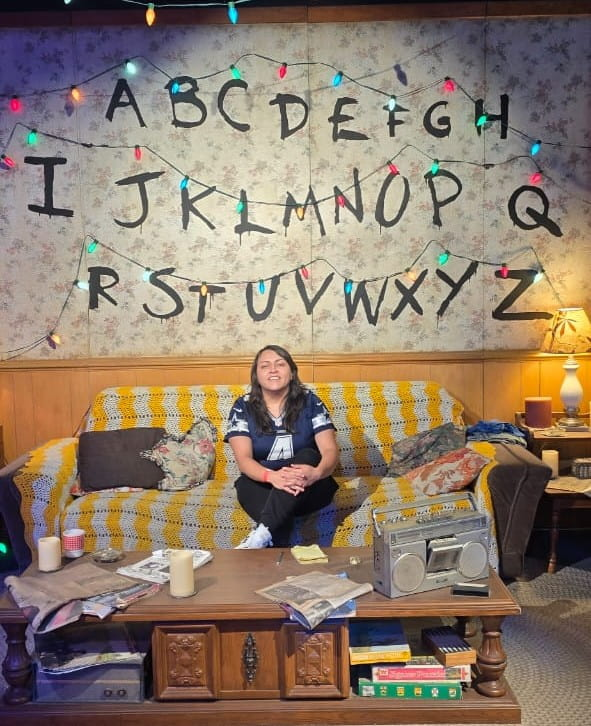

Home
About Me
My name is Linda Torres, I’m 36 years old and from Mexico City.
I’m an analytical person who
enjoys programming, data analysis, scuba diving, traveling, and watching thrillers.
I have three pets named after Pokémon and Star Wars characters.
I love Mexico for its diverse landscapes, climates, and cuisine, and I often travel
to explore its regional dishes.
I also appreciate that my career allows me to work from anywhere in the world.
Student Photo
